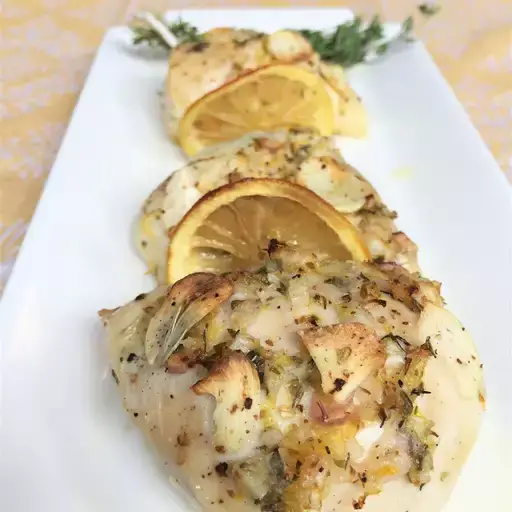

Roasted Lemon, Garlic, and Chicken

Description
If you've never tried roasting lemons, you must! Flavor transformation, especially paired with chicken and garlic. This is a wholesome and delicious recipe.
- Prep Time: 20 mins
- Cook Time: 50 mins
- Total Time: 1hr 10 mins
- Servings: 4
Ingredients
- ⅓ cup dry white wine
- ¼ cup extra-virgin olive oil
- 1 medium shallot, diced
- 1 tablespoon lemon zest
- 1 lemon, juiced
- 2 teaspoons dried oregano
- 1 teaspoon fresh thyme leaves
- 2 teaspoons kosher salt, divided
- 2 pounds skinless, boneless chicken breast halves
- freshly ground black pepper to taste
- 3 cloves garlic, thinly sliced
- 8 lemon slices
- 1 bunch thyme sprigs, tied together
Directions
- Preheat the oven to 400 degrees F (200 degrees C).
- Combine white wine, oil, shallot, lemon zest, lemon juice, oregano, thyme leaves, and 1 teaspoon kosher salt in a bowl. Pour 1/2 the sauce into a 9x12-inch baking dish.
- Pat chicken breasts dry and place over sauce in the baking dish. Cover chicken with remaining sauce. Sprinkle with remaining 1 teaspoon salt and pepper to taste. Place garlic slices over chicken; tuck lemon slices and thyme bundle between pieces of chicken.
- Roast in the preheated oven for 20 minutes. Turn chicken and cook until no longer pink in the centers and an instant-read thermometer inserted into the meat reads at least 165 degrees F (74 degrees C), 20 to 25 minutes more.
- Remove chicken from the oven; cover the pan tightly with aluminum foil and allow to rest for 10 minutes. Serve with pan juices poured over chicken and roasted lemon slices, squeezing lemon juice from slices over chicken.